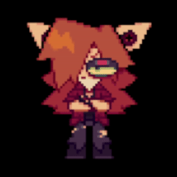

Thank you so, so, SO much to everyone who has bought a Kao plush!!! We reached our goal of selling 200 plushies, and have received a two-week extension for the campaign. Since then, we have sold over a hundred more!!! Your contributions will do wonders in allowing us to continue working on Doll Eye. And as a bonus, you get a cute little guy out of it, too!
At the time of writing, the Kao Ushi plush is only available for another six days, so get one while you can!
MugsyMayhymn and I – voice actors of Kao and Mystery, respectively – are offering free voice requests to anyone who sends us proof of purchase of a plushie. To get yours, please message @mugsymayhymn and/or @fossfeen on Discord.
Doll Eye Chapter One’s Steam release is in its final stages. Our programmer, Jorge, has put in a lot of work to port the entire game to a newer version of RPG Maker. This change has allowed us to make several tweaks and optimizations. The release will have working builds for Windows, Mac, and Linux. The only thing keeping us from releasing it at this point is some backend business stuff. As previously stated, it will be available for free. There will be an announcement here at the time of the game’s release.
By far, the majority of our development time over the past few months has been spent working on Chapter Two. (And even a little bit on Chapter Three, if you’d believe it.) There is so much that we cannot wait to share with you. The game is really shaping up to be something incredible.
In our last update, we shared a look at Alfred’s new walksprites. Since then, they have received even more polish – mostly from the talented hands of @ichigogoooooooo on Twitter and a new member of Dreamsteed, @deceseze on Instagram! Take a look (WIP!):
We’d also like to share some new (WIP!) walksprites for Peter, Shai, and a new character in Chapter Two:

I know that some will be disappointed with the small amount of content in these updates. We are probably more excited for you to see what we have been working on than you are. Please believe me when I say that this chapter will be worth the wait. There is still no expected release date, but we are closer than ever to getting the game out. Even without much of the gameplay implemented, in its current state, the game has over two hours of content.
Happy new year, everyone! We’re excited for everything to come in 2023. Here’s a small update for now.
First, an announcement regarding future installments of Doll Eye:
While Chapter One will remain free, Doll Eye will be put behind a paywall from the second chapter onward. There are quite a few reasons for us to do this. The biggest one is that it turns out that making such a large project for free isn’t exactly sustainable. The funds from the various plushie sales have helped tremendously, but we figure it’s only fair to charge for a product with so much time and energy put into it.
We plan for each future chapter to be available for around $5 on Steam. For all the members of our fanbase this decision alienates, we apologize. There will still be playthroughs you can watch on YouTube, we are sure! With the increase in quality the Doll Eye series is seeing, we feel $5 is a very reasonable price. We are already in the process of bringing Chapter One to Steam, which, again, will be free, and you will see an update here when that happens!
We've also tossed around the idea of bringing Doll Eye to the Nintendo Switch, but that’s something for future us to worry about. Our sights are set on finishing Chapter Two before we tackle something like that. We won’t guarantee a Switch port is happening, but we know it’s possible.
With all that said, we’ll conclude this update with a video showcasing Alfred’s new walksprites and an area from the beginning of Chapter Two! We’re pretty proud of how these look. Of course, everything shown here is a work in progress and is subject to change.
(Taps mic) Oh, god... is this thing on? Am I doing this right? ... Whatever, we're just some indie youngsters in a Discord server. Let's not take ourselves too seriously.
We asked ourselves how far along we think Chapter Two is, and we'd say it’s about... (drumroll, please)
40% done.
"40%!? After TWO whole years since Chapter One came out?"
Ok, ok, ok. Hear us out. It's gonna be a lot faster from here on – a lot of our time has been spent conceptualizing the whole game! We’ve written a whopping 107 pages of character bios, chapter outlines, storyboards, and other reference material for development. Various big projects like the Chapter One Anniversary Update, the Dr. Mystery plush campaign, The Dark Symphony, the website you're looking at right now, and more have been taking up big chunks of our time.
School, work, mental health... Life can dry us up like raisins, but things seem to be heading towards a better path! :-D
For example... the money we raised from the plush campaign (THANK YOU SO MUCH TO EVERYONE WHO BOUGHT ONE) has allowed us to hire an awesome background artist AND a programmer that actually knows how to code! Alright, what else... Uhhhh... the full outline for Chapter Two is already done! We have a bunch of dialogue, art, music, and roughly 20 minutes of gameplay coded in, a lot of new character designs (you don't even KNOW dude) and soooooooo much concept art. And hey, check out this new teaser video!
We're pretty positive that development is gonna be a lot faster from here on, especially once our co-director finishes up with college.
So, yeah! We want this game to be done just as badly as you do (probably even more), but unfortunately there's still time that we're all gonna have to wait out. We're no fans of promises, but something that we can promise is this: we haven't been slacking! This project is kind of the main focus of our (director and co-director) lives, and we're doing our best to make space in our personal lives to work on it as much as we can!
We appreciate your continued interest in the project, and we thank you for reading this update. This website is where you will find development updates about Chapter Two and other DREAMSTEED projects in the future.